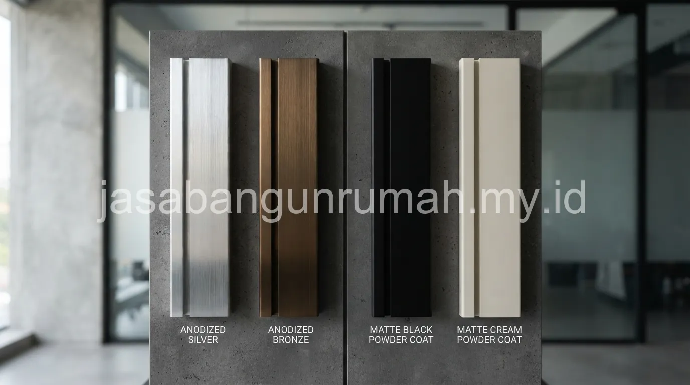

Daftar Isi
- Berapa Kisaran Harga Pasang Kusen Aluminium 3 Inch dan 4 Inch per Meter Lari?
- Apa Perbedaan Finishing Anodized dan Powder Coating pada Kusen Aluminium?
- Merk Kusen Aluminium Apa yang Umum Direkomendasikan untuk Rumah Tinggal?
- Apa Saja Komponen Lain yang Perlu Diperhitungkan dalam Total Biaya Pemasangan?
- Bagaimana Proses Pemasangan Kusen Aluminium Dilakukan di Lapangan?
- Apakah Harga Pemasangan Kusen Aluminium Berbeda Antar Wilayah?
Harga pasang kusen aluminium per meter lari bervariasi tergantung ukuran profil, apakah tiga inci atau empat inci, serta merk yang dipilih di antara Alexindo, YKK, dan Inkalum yang masing-masing memiliki tingkat ketebalan dan kualitas finishing berbeda.
Berapa Kisaran Harga Pasang Kusen Aluminium 3 Inch dan 4 Inch per Meter Lari?
Kusen aluminium profil tiga inci umumnya digunakan untuk jendela berukuran standar, sedangkan profil empat inci lebih sering dipilih untuk pintu atau bukaan dengan dimensi lebih besar yang membutuhkan kekuatan tambahan pada rangka kusennya. Pemilihan ukuran profil ini erat kaitannya dengan desain fasad rumah yang direncanakan sejak awal.
Harga per meter lari kusen aluminium sudah mencakup bahan profil aluminium, aksesoris seperti engsel dan kunci dasar, serta upah pemasangan oleh tukang yang berpengalaman menangani material ini. Profil empat inci umumnya memiliki harga lebih tinggi dibandingkan profil tiga inci karena jumlah material aluminium yang digunakan lebih banyak, sekaligus membutuhkan penanganan yang sedikit lebih rumit saat proses pemotongan dan penyambungan di sudut-sudut kusen.
Selain ukuran profil, ketebalan dinding aluminium turut memengaruhi harga, di mana profil dengan ketebalan lebih tinggi cenderung lebih kokoh dan tahan terhadap tekanan angin, namun dibanderol dengan harga yang lebih mahal dibandingkan profil tipis yang lebih ekonomis namun kurang direkomendasikan untuk bukaan berukuran besar. Untuk gambaran anggaran keseluruhan, simak panduan cara membuat RAB rumah agar komponen kusen sudah masuk dalam perencanaan biaya sejak awal.
Apa Perbedaan Finishing Anodized dan Powder Coating pada Kusen Aluminium?
| Jenis Finishing | Karakteristik | Ketahanan | Pilihan Warna |
|---|---|---|---|
| Anodized | Proses elektrokimia yang membentuk lapisan oksida pada permukaan aluminium | Tahan gores dan tahan korosi dalam jangka panjang | Umumnya terbatas pada warna natural, silver, dan champagne |
| Powder Coating | Pelapisan bubuk cat yang dipanaskan hingga melekat merata pada permukaan | Tahan terhadap sinar UV dan perubahan warna, namun rentan tergores dibanding anodized | Pilihan warna jauh lebih beragam, termasuk warna solid dan tekstur kayu |
Finishing anodized umumnya dipilih oleh pemilik rumah yang mengutamakan daya tahan jangka panjang terhadap gesekan dan korosi, terutama untuk kusen yang dipasang di area dengan intensitas penggunaan tinggi seperti pintu utama. Finishing powder coating lebih diminati oleh pemilik rumah yang menginginkan variasi warna lebih luas untuk menyesuaikan dengan konsep fasad rumah tertentu, misalnya warna hitam doff atau warna menyerupai tekstur kayu alami yang sedang tren pada desain rumah minimalis modern.
Pemilihan antara kedua jenis finishing ini sebaiknya mempertimbangkan lokasi pemasangan dan tingkat paparan terhadap cuaca, karena kusen yang terpasang pada sisi rumah yang sering terkena hujan dan sinar matahari langsung membutuhkan pertimbangan ketahanan yang lebih matang dibandingkan kusen yang terpasang pada area yang lebih terlindung.
Dari sisi perawatan, kusen dengan finishing anodized umumnya lebih mudah dirawat karena cukup dibersihkan dengan kain lembap tanpa risiko lapisan terkelupas, sedangkan kusen dengan finishing powder coating sebaiknya dihindarkan dari pembersih berbahan abrasif yang dapat mengikis lapisan cat bubuk pada permukaannya secara perlahan. Pemilik rumah yang mengutamakan kepraktisan perawatan jangka panjang dengan variasi warna terbatas dapat memilih anodized, sementara yang menginginkan fleksibilitas warna sesuai konsep desain fasad tertentu dapat mempertimbangkan powder coating dengan catatan perawatan yang sedikit lebih hati-hati.

Merk Kusen Aluminium Apa yang Umum Direkomendasikan untuk Rumah Tinggal?
Merk Alexindo, YKK, dan Inkalum menjadi tiga nama yang umum dijumpai di pasaran material aluminium untuk kusen rumah tinggal, dengan masing-masing merk memiliki segmentasi harga dan spesifikasi ketebalan yang sedikit berbeda satu sama lain.
YKK dikenal sebagai salah satu merk dengan reputasi kualitas yang cukup mapan di kalangan kontraktor, sering dipilih untuk proyek yang mengutamakan presisi dan konsistensi ketebalan material pada setiap batang profilnya. Alexindo dan Inkalum juga merupakan pemain lama di industri aluminium domestik, dengan variasi produk yang mencakup beberapa tingkatan ketebalan sesuai kebutuhan proyek, mulai dari segmen ekonomis hingga segmen menengah ke atas.
Pemilihan merk sebaiknya tidak hanya didasarkan pada harga semata, tetapi juga mempertimbangkan ketersediaan aksesoris pendukung seperti engsel dan kunci yang kompatibel dengan profil merk tersebut, karena beberapa merk memiliki sistem aksesoris yang lebih mudah ditemukan di pasaran dibandingkan merk lain yang aksesorisnya lebih terbatas distribusinya di sebagian wilayah.
Apa Saja Komponen Lain yang Perlu Diperhitungkan dalam Total Biaya Pemasangan?
Selain harga profil aluminium per meter lari, total biaya pemasangan kusen juga perlu memperhitungkan biaya kaca yang akan dipasangkan pada kusen, jenis sealant yang digunakan untuk mengisi celah antara kusen dan dinding, serta aksesoris tambahan seperti grendel atau hak angin apabila dibutuhkan pada jendela yang bisa dibuka.
Kaca dengan ketebalan lebih tinggi atau jenis kaca khusus seperti kaca tempered untuk bukaan besar umumnya menambah biaya signifikan dibandingkan kaca polos standar, sehingga pemilik rumah sebaiknya menentukan spesifikasi kaca sejak awal agar estimasi biaya per meter persegi total lebih akurat. Sealant silikon netral berkualitas baik juga menjadi komponen penting yang tidak boleh diabaikan, karena penggunaan sealant yang tepat berperan besar dalam mencegah rembesan air hujan melalui sela-sela antara kusen aluminium dan dinding di sekitarnya.
Bagaimana Proses Pemasangan Kusen Aluminium Dilakukan di Lapangan?
Proses pemasangan dimulai dari pengukuran dimensi bukaan dinding secara presisi, pemotongan profil aluminium sesuai ukuran yang dibutuhkan, perakitan rangka kusen di luar lokasi pemasangan, kemudian pemasangan rangka ke dalam bukaan dinding yang sudah disiapkan sebelumnya.
Setelah rangka kusen terpasang pada posisinya, tahap berikutnya adalah pengisian celah antara kusen dan tembok menggunakan sealant silikon, dilanjutkan dengan pemasangan kaca pada bagian dalam profil kusen sesuai jenis dan ketebalan yang telah ditentukan. Tahap akhir meliputi pemasangan aksesoris seperti engsel, kunci, dan grendel, kemudian pengujian fungsi buka tutup untuk memastikan seluruh bagian bergerak dengan lancar tanpa kendala.
Ketelitian pada tahap pengukuran menjadi kunci utama keberhasilan pemasangan, karena kusen aluminium yang sudah dipotong dan dirakit sesuai ukuran tertentu tidak dapat disesuaikan lagi apabila terjadi kesalahan ukuran yang signifikan, berbeda dengan kusen kayu yang masih dapat diserut atau dipangkas sedikit di lokasi apabila terjadi selisih ukuran kecil dengan bukaan dinding. Untuk memahami lebih lanjut bagaimana proses kerja kontraktor mengelola tahapan seperti ini, simak ulasan lengkapnya.
Apakah Harga Pemasangan Kusen Aluminium Berbeda Antar Wilayah?
Harga pemasangan kusen aluminium dapat berbeda antar wilayah tergantung ketersediaan distributor resmi merk tertentu, biaya transportasi material dari pabrik atau gudang ke lokasi proyek, serta standar upah tukang spesialis aluminium yang berlaku di masing-masing daerah.
Wilayah dengan akses distribusi material yang lebih mudah, seperti kota besar yang memiliki banyak distributor resmi, umumnya menawarkan harga yang lebih kompetitif dibandingkan wilayah yang lebih jauh dari pusat distribusi sehingga membutuhkan biaya pengiriman tambahan. Oleh karena itu, estimasi harga yang beredar secara umum sebaiknya tetap dikonfirmasi ulang sesuai lokasi proyek masing-masing, karena selisih harga antar wilayah bisa cukup terasa terutama untuk proyek dengan volume pemasangan kusen yang besar.
Pemilihan tukang yang sudah berpengalaman menangani material aluminium, bukan sekadar tukang kayu konvensional yang baru beralih menangani aluminium, juga memengaruhi kualitas hasil pemasangan, mengingat teknik pemotongan dan penyambungan aluminium memiliki perbedaan mendasar dibandingkan teknik kerja kusen kayu tradisional. Pelajari lebih lanjut perbedaan antara kontraktor rumah dan tukang harian sebelum memutuskan siapa yang akan mengerjakan proyek Anda.
Pemilik rumah yang ingin mendapatkan rincian biaya pemasangan kusen aluminium secara lebih lengkap sesuai kebutuhan proyek, termasuk pemilihan merk, ukuran profil, dan jenis finishing yang sesuai, dapat menghubungi jasa kontraktor rumah kami untuk berkonsultasi, terutama apabila proyek mencakup banyak titik bukaan dengan kombinasi ukuran dan jenis kaca yang berbeda-beda di setiap ruangan.